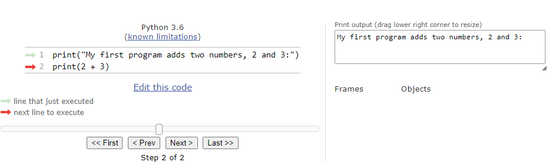

There are two ways to execute Python programs. Both techniques are designed to assist you as you learn the Python programming language. They will help you increase your understanding of how Python programs work.
First, you can write, modify, and execute programs using the editor. An example is below. You can run the code by clicking the run button at the top.
Second, you can trace your code using PythonTutor. Click here open PythonTutor and paste in your code. The click Visualize Execution to step through your code line by line.

© Copyright 2018 LTC Tom Babbitt, Kyle King, Chip Schooler, Brad Miller, David Ranum, Originally created using Runestone Interactive.